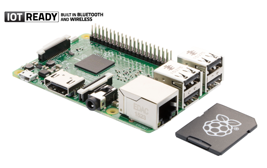
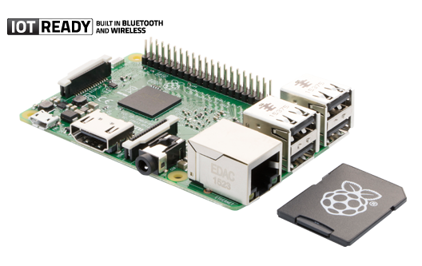

Welcome to EMP Industries
This website is for a major project in Industrial technology multimedia. The website contains information on Raspberry pi including how to use the raspberry pi provided for however may find themselves using it. All content within the website is purely being used for educational purposes.
What is raspberry pi
The Raspberry Pi is a series of small single-board computers developed in the United Kingdom by the Raspberry Pi Foundation to promote the teaching of basic computer science in schools and in developing countries. The original model became far more popular than anticipated, selling outside of its target market for uses such as robotics. Peripherals are not included with the Raspberry Pi. Some accessories however have been included in several official and unofficial bundles.
What the Raspberry Pi can do
The Raspberry Pi is a fully featured computer, and you can do almost anything with it that you can do with a desktop computer. When you switch it on, it has a text prompt, but you can use a graphical windows desktop to start and manage programs. It also comes with Python, a professional programming language used by YouTube, Google, and Industrial Light and Magic (the special effects gurus for the Star Wars films), among many others.
 


Copyright © 2017 EMP Industries - All information is pruely for educational purposes